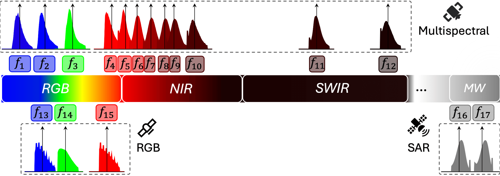

SMARTIES stands out from existing foundation models on several aspects:
Project data from heterogeneous sensors into a shared spectrum-aware space.
Pretrain a simple yet effective model, demanding as little data as possible with similar complexity to MAE.
Enable downstream transfer using a unified model across a diverse set of remote sensing sensors and tasks.
Use of arbitrary combinations of spectral bands for downstream purposes, enabling flexible remote sensing applications.
From optical sensors to microwave radars, leveraging the complementary strengths of remote sensing (RS) sensors is crucial for achieving dense spatio-temporal monitoring of our planet. In contrast, recent deep learning models, whether task-specific or foundational, are often specific to single sensors or to fixed combinations: adapting such models to different sensory inputs requires both architectural changes and re-training, limiting scalability and generalization across multiple RS sensors. On the contrary, a single model able to modulate its feature representations to accept diverse sensors as input would pave the way to agile and flexible multi-sensor RS data processing. To address this, we introduce SMARTIES, a generic and versatile foundation model lifting sensor-specific/dependent efforts and enabling scalability and generalization to diverse RS sensors: SMARTIES projects data from heterogeneous sensors into a shared spectrum-aware space, enabling the use of arbitrary combinations of bands both for training and inference. To obtain sensor-agnostic representations, we train a single, unified transformer model reconstructing masked multi-sensor data with cross-sensor token mixup. On both single- and multi-modal tasks across diverse sensors, SMARTIES outperforms previous models that rely on sensor-specific pretraining.
| Dataset | Task | Evaluation Type | Sensor(s) Used |
|---|---|---|---|
| BigEarthNetS2 | Multi-label Classification | Fine-tuning | Sentinel-2 |
| BigEarthNetS1 | Multi-label Classification | Linear Probing | Sentinel-1 |
| BigEarthNetMM | Multi-Modal Multi-label Classification | Linear Probing | Sentinel-1, Sentinel-2 |
| EuroSAT | Scene Classification | Fine-tuning | Sentinel-2 |
| EuroSAT | Scene Classification | Linear Probing | Sentinel-2 |
| EuroSAT | Scene Classification | kNN | Sentinel-2 |
| RESISC-45 | Scene Classification | Fine-tuning | RGB |
| WHU-RS19 | Scene Classification | kNN | RGB |
| UC-Merced | Scene Classification | kNN | RGB |
| BurnScars | Semantic Segmentation | UPerNet Probing | HLS |
| DynamicEarthNet | Semantic Segmentation | UPerNet Probing | Planet |
| SpaceNet7 | Semantic Segmentation | UPerNet Probing | Planet |
| SICKLE | Semantic Segmentation | Non-linear Probing | Landsat-8 (OLI, TIRS) |
| DFC2020 | Multi-Modal Semantic Segmentation | Non-linear Probing | Sentinel-1, Sentinel-2 |
@article{smarties,
title={{SMARTIES}: Spectrum-Aware Multi-Sensor Auto-Encoder for Remote Sensing Images},
author={Gencer Sumbul and Chang Xu and Emanuele Dalsasso and Devis Tuia},
journal={arXiv preprint arXiv:2506.19585},
year={2025}
}